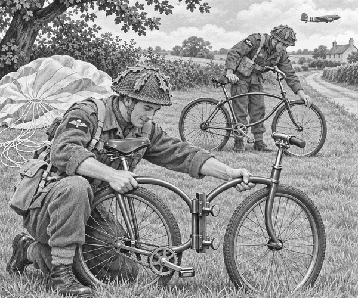

It looked like an ordinary bicycle.
It had two wheels, a saddle and pedals.
But this bicycle could do something very strange.
It could fold in half.
During World War Two, British airborne soldiers travelled in aircraft.
They landed by parachute or in gliders.
Once on the ground, they sometimes needed to move quickly and quietly.
A bicycle needed no fuel.
It was quieter than a lorry.
There was one big problem.
A normal bicycle was awkward to carry through the sky!
The Birmingham Small Arms Company, called BSA, made a special answer.
Its airborne bicycle had a light frame made from two curved loops.
Two large thumbscrews joined the frame.
Turn the screws loose and the front half could swing beside the back half.
Now both wheels sat close together.
Bike fact: One museum example weighs about 9.5 kilograms. That is light enough for an adult soldier to lift and carry.
The folded bicycle could travel with airborne troops.
Different ways of dropping it were tested.
Some bicycles came down on small parachutes.
Others were carried with a soldier and lowered on a strap before landing.
Down came the parachute.
Down came the soldier.
Down came the bicycle.
After landing, the soldier had work to do.
Find the bicycle.
Swing the two halves open.
Tighten the thumbscrews.
Check the wheels and brakes.
Then ride!
The bicycle could carry a soldier and some equipment along a road or track.
It could also be folded again when space was tight.
History fact: British airborne troops used folding bicycles during the D-Day landings and at Arnhem in 1944.
The idea was clever, but it was not always easy.
A rough landing could bend a wheel.
Mud, bags and heavy equipment could make riding difficult.
Jeeps later became more useful for many jobs.
Yet thousands of folding bicycles were made.
Some survived the war and were ridden for many years afterwards.
Today, you can see real airborne bicycles in museums.
They remind us that an army vehicle does not need an engine.
Sometimes it only needs two wheels, two pedals and a very clever fold.
1. Why was the bicycle made to fold?
2. What held the open frame firm?
3. Where were the bicycles used in 1944?